Unit Two -- Graphics
This unit focuses on working with images that, unlike photos, were not
created with a camera, but instead created directly on the
computer. These types of graphics are useful in things like
flyers, magazine covers, company logos, advertisements, or your family
christmas card.
However, there is a very important part of graphics that this course
will only touch on a little...the artistic elements. To make good
graphics, you must understand what images are most pleasing to the
eye. Although this section will provide a few pointers along the
way, to really understand this takes several courses of study, years of
practice and a lot of hard work. Instead, this course will focus
on some of the basics of how graphics work, and how to use a few tools
to come up with some very basic designs.
If you want more information about the more artistic side of graphic
design, you can start by reading through these articles:
http://en.wikipedia.org/wiki/Design_principles_and_elements
http://en.wikipedia.org/wiki/Composition_(visual_arts)
http://en.wikipedia.org/wiki/Color_theory
http://en.wikipedia.org/wiki/Aesthetics
Vector Graphics
Unlike raster images (photos, covered in Unit One) vector graphics
do not consist of pixels arranged on a grid with different values.
Instead vector graphics are stored as sets of instructions that a
computer can run to re-create a graphic.
A simplistic example of these instructions could be:
-
Create a circle with a center 3 units above the center, and a
radius of 2 units.
-
Fill circle with yellow
-
Create a line from 2 units below the center to 3 units above and
two units left of the center.
-
Create a line from 2 units below the center to 3 units above and
two units right of the center.
If there were a program that could run this very simple script, it
might draw to the screen the following:

The good thing about this is that you'll most likely never have to
actually look at the script the computer creates, just like you never
have to look at the array of pixels and channels that are stored in a
photograph. However, if you want to get advanced, that would be
possible (and quite a bit easier than editing a raster image). Instead,
we will be using tools that convert the things we draw with
the mouse and keyboard into one of these scripts that the computer
can follow when it wants to re-produce an image to view on the screen
(the screen is really just a raster graphic viewer). Then when we
are all done, we can have it run the script again to produce another
raster graphic that can be saved into a PNG file.
It is also possible for this script to include a certain amount of
time to wait before something happens. This allows for animations;
some simple examples would be having a stick figure move across the
image or having a ball bounce.
One of the very important benefits of vector images is that all the
commands for the image are relative. If you need to increase the
size of the image, you just need to change the units that all the
commands are applied to. In the above example, one unit equals
approximately 10 pixels, but this could easily be modified so that one
pixel equals 20 pixels or even 100 pixels. The image would
automatically scale up to the new size without losing any quality, the
image will stay crisp and you won't see any pixel artifacts. This
is the opposite of how photos work, there if you were to try to scale
the photo up to double or ten times the original size, you would see
problems show up in the image.
Here is an example using our simple image. In each case, the
vector graphic is on the left and the raster graphic is on the right.
One unit equals 10 pixels.
One unit equals 20 pixels.


One unit equals 100 pixels. (This one is being scaled back
down to one unit equals 40 pixels by the web-browser to fit to
the screen, if you want to see it as full-sized right click on it and
view it separately.)


You can see that as we talked about in the photos section, the raster
graphic doesn't scale up to the large size very well.
However, the vector graphic continues to look smooth and clean at any
size.
In addition to cleanly scaling, vector graphics usually take up less
space. In a raster image, data needs to be stored for every pixel
(in three or four channels). If you have large images, this can
be millions of bytes. Vector graphics on the other hand only
store the information necessary to make the shapes and color them
in. For the above example, this is just four commands, each one
taking only a few bytes. There are things you can do to make very
complicated vector graphics, but typically they will be much smaller
than their raster counterparts.
The other very nice thing about vector graphics is that when you are
using graphical programs like Inkscape or Illustrator to edit them, it
is very easy to select objects. For photos we had some real
challenges in selecting different objects (like the airplane and the
statue's arm). However, since in vector graphics the commands to
create each object are stored, when you click on an object, it is easy
for the program to guess which object you are trying to select.
You can then easily modify that object by resizing it, rotating it, or
moving it.
File Formats
The primary file format currently in use is SVG or Scalable Vector
Graphics (see: http://en.wikipedia.org/wiki/Svg
) which is a type of human readable file called XML. Although XML
and SVG are human-readable, we will not be reading them directly as
part of this material. SVG is supported in most vector drawing
programs, however it is not yet supported by all web browsers (though
this is rapidly changing). If you simply want to use your images on
web pages, it is best to convert them to Portable Network Graphics
(PNG) which is a lossless raster format.
The other major format for Vector Graphics is the EPS or
Encapsulated Post Script. Post Script itself is a file type used for
printing (especially industrial printing), and EPS images are built
to be easily put inside of a Post Script document. This format has
been around a lot longer than SVG, and is supported by many more
tools (especially the old ones). Likewise, it is not recommended for
use with web browsers.
Inkscape
Inkscape will be the vector editor that we do the majority of our work
in, once we have learned the fundamentals here, we will move on to
trying the same concepts out in Adobe Illustrator, which is the other
major vector graphics editor on the market. If you don't have Inkscape on your computer, you can get it from our software downloads page.
To start with Inkscape, there are three interactive tutorials that are
built in to the program that are very good, and because they are
interactive, they are better than just words on paper, so instead of
reading what they have to tell you here, lets open up Inkscape and give
them a try.

Once you have Inkscape open...
Inkscape Basics
Go to the menu Help -> Tutorials -> Inkscape: Basics. That
will open in a new window and you can read all about (and try out!)
panning, zooming, the tools, documents, moving, scaling, rotating,
important keys, selections, fills, strokes, duplication, layers, and
depth.
Now that we have a grasp on the basics, lets go do an example. I
have prepared a .svg file that can be opened in Inkscape with all the
material that we'll need.
BasicScene-orig.svg

In this one SVG file there is a background all setup (made up of two
parts: the foreground with all the trees, ground, and water; and the
background with the sky). There are also three different
components that need to be added in. The fire and tent need to be
scaled down and put in the empty area between the trees. The
mountains need to be scaled up and be put behind the ground and trees
but in front of the sky.
Here's what the finished result will look like.
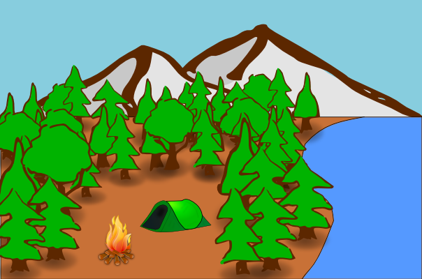
Working with Shapes
Once you've mastered those basics, we'll move on to the next tutorial:
Help -> Tutorials -> Inkscape: Shapes
Here we will learn about and try out:
Rectangles (with rounding), ellipses and circles, stars and polygons,
and spirals.
Now lets go and try out all the shape tools and many of their different
options. In one Inkscape page, draw the following.
Rectangle: Filled with no stroke, stroke with no fill, fill and stroke,
rounded corners, rounded corners and edges.
Ellipse: Ellipse, slice, arc.
Polygon/Star: Polygon, polygon with different number of sides, star,
star with offset points, polygon with rounded corners, polygon with
randomizer.
Spiral: Spiral, spiral with less turns, spiral that doesn't start from
the middle, spiral with faster divergence.
Your page may look something like this:

Paths and Text
Finally, we have one last tutorial that introduces some of the most
important concepts:
Help -> Tutorials -> Inkscape: Advanced
Here we will learn about:
Cutting and pasting, free hand drawing, bezier curves, paths and text.
One of the most important parts of this section is working with bezier
curves. To get a little practice, we're going to turn a simple
rectangle into a piece of paper that is starting to curl
up. Here's what the end result will look like:
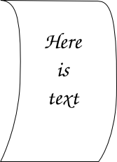
First, download the .svg
file of the starting rectangle.
You'll notice that there are a couple of handy nodes about half way
down the sides of the rectangle. Let's go ahead and pull both of those
nodes to the right (using the node-editing mode).
Once we've got them out there, we will add some bezier curves into the
strait lines. To do this, hold down shift as you click on one of
the nodes, and drag out from it. That should create a handle for
the curve coming out of that point. Go ahead and do that for both
sides of the middle points, and then also to the lines coming down from
the two top points.
Once we've got the paper gently curling, lets add some example
text. To do that, we'll switch to the text tool. Then click
near the center of the paper and type whatever text you want to
see. You can change the font size, centering, and font to make it
look any way you like.
Now that we've got those basics down, lets use the path tool to make text follow an irregular path through our drawing.
We'll start out by making a simple path with the Bezier Curve Tool.

Once we've got the basic shape in, we'll manipulate the curve's handles to smooth it out.

Then we'll switch to the text tool and type in some text.
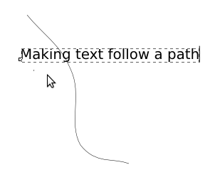
Now we'll select both the path and the text.

With them selected, we'll click Text -> Put on Path.

Looking good so far, now we just need to get rid of that line that we
have in there. To do that lets select the line and remove its
stroke.
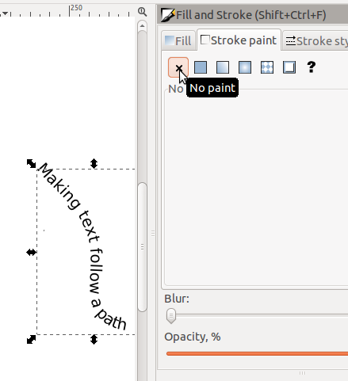
Then finally we're left with just our text.
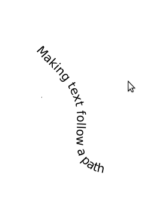
Using Proportions and Space
One of the most important things to think about when creating graphics
is if the proportions between the various components of your graphic
are correct.
The most important aspect of proportion is when you are working with a
graphic that shows an image of a 3-Dimensional scene (such as the
campsite example used above). When creating a 3-D scene in two
dimensions (on the computer screen, or paper) you as the artist need to
make sure that the correct proportions are used to accurately represent
the scene. Not accurately re-creating it will cause the people
viewing the work to sense that something isn't correct, often without
being able to actually identify it, which will lead them to not enjoy
the work. The best way to think about the proportion of 3-D works
is to understand that things look bigger when they are closer.
When
you are putting together a scene in Inkscape, it is easy to re-size the
objects you are working with. So use this ability to increase the
size of close objects and to shrink the size of distant objects, so
that they look natural.
If you look closely at the example of the campground we used above,
you'll notice that the trees are smaller in the distance and larger up
close. This was done by using the same tree object, and simply
changing the size to match what was needed.
Lets try that same example now. Here is the original file, with
just the background and example trees. Copy and paste the trees
into the background and change their size to match the correct
proportion. Start in the back with the small trees, then move
forward with increasingly large trees. Don't forget to leave an
open area for our campsite.
Background-Empty.svg

The other main aspect of proportion is in a non-3-D scene. When
you simply have text and graphics you need to be aware of the relative
sizes between the different objects. Also, the amount (and
location) of open space in the image is very important.
The most common rule used for determining the relative sizes of
objects and space is called the Golden Rule or Fibonacci
Sequence. This was developed by the mathematician from Piza named
Fibonacci. His sequence is simply made where the next number in
the sequence is the sum of the previous two numbers. Starting
from 0:1 the start of the sequence is 0:1:1:2:3:5:8:13:21
etc. Over the years scientists and artists have found that
this sequence is everywhere in nature from snail shells to tree
leaves. In addition, the human eye has developed over thousands of
years to readily identify this, and objects in that sequence
soothing.
In this example on the left the sizes of the text and the spacing
between them both follow the 1:1:2:3 ratio. In this case the font
is 20:20:40:60 and the spacing is 46:92:138. In the other
example,
on the right, the size of the font simply has 20 added each time
20:40:60:80. You may notice that the one on the left,
following the Fibonacci sequence, seems to follow a more natural
progression extending up whereas the one on the right seems more
abrupt.
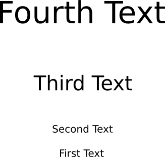
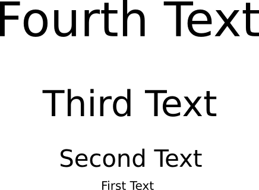
The other thing that can be done with space is that it can be used to
draw the attention of the viewer in a certain direction.

Notice how all the empty space inside the box tends to draw your eye
down to the red circle? This can be even more useful in more
complicated images with many different objects in them.
Using Light
As was true with photos, getting the lighting correct is very important
for graphics that look good. However, unlike photos where we had
to work with the light that the camera had, where the best we could do
was improve it, here we have complete control of how the lighting
affects the image. However, with all that control means that we
need to plan ahead and determine what lighting we want, whereas in
photos we could just look at what we were given and figure out how to
make it as good as it could be.
Here's an example of an open cardboard box, without any lighting
applied.

And here is that same box, with lighting applied to it.

Its easy to see the difference! In this case, the author imagined
the source of the light to be above and a little to the left of the
box. So you can see the shadow coming down from it and to
the right. Also the right-front face of the box is darker than
the left-front face of the box, because some light is coming down on
it. Also, the inside of the box is in shadow because the walls
are limiting how much light can get in.
If you look closely you may figure out that there is no way the box
could physically be lit like this, the angles of lighting simply aren't
possible, but that's not important. What is important is that
there is some aspect of lighting, and that gives the eye enough to
separate out the different surfaces, unlike in the first picture.
In graphics, unlike photos, it isn't necessary to make the lighting
super realistic, the audience isn't expecting that from graphics, but
there still needs to be enough to be pleasing to the eye.
Using Color
When the human eye sees color, it is actually recording electronic
waves of light hitting cells in the back of the eye. A single
particle of light is called a photon, and each photon oscillates at a
specific frequency, which corresponds to a wavelength. Photons
with a faster frequency (and shorter wavelength), are towards the
violet end of the spectrum, while photons with a lower frequency (and
longer wavelength) are towards the red end of the spectrum.
Below is a graphic depicting the spectrum of visible light.
You may notice that the two ends are dark, these are actually not
black, rather they glow just as brightly as all the areas in the
middle, but in the infra-red and ultra-violet colors that the human eye
cannot detect.
The colors above are the only colors that the human eye can
detect. You may notice that there are many colors missing: brown,
purple, not to mention white, black, and gray. This is because
these colors (and many more) don't actually exist, but we perceive them
because of how the photons of light hit our eye. To learn more
about the visible spectrum of light, see this page: http://en.wikipedia.org/wiki/Visible_spectrum http://es.wikipedia.org/wiki/Espectro_visible
When we see an area that is black, that is because very few or even no
photons are hitting our eye from that direction. On the other
hand, when we see the an area that is the color white, we are getting a
lot of photons, from every single color hitting our eye at the same
time. Gray is simply in between that, when we see a medium number
(too many = white, too few = black) of photons, from all the different
shades of light, we will see gray. All the other colors are found
by having photons at two or more different frequencies hit the same
part of the eye at the same time. For instance, if we have two
photons of red for every one photon of green (and no other colors),
then we will see brown in that area. If we see one photon of red
and one of blue, we will see purple.
So, brightness of the color is determined by the total number of
photons, and what color we see is determined by what frequency or
combinations of frequencies the photons have when they strike our eye.
As we learned in the photo section, when a computer monitor projects
light out to our eyes, it is projecting Red, Green and Blue.
These colors can be added together to make all the other colors.
However, when we print an image out onto a piece of paper, the paper
isn't projecting light into our eyes like a computer screen is, rather
it is reflecting the light in the room. When we were projecting
light, we started with black, and added colors to get the color we
wanted...if we wanted to get to white, then we added all the
colors. However, when we talk about reflecting light, we start
with a white light, then we start taking away parts of that white
light, by absorbing the photons of certain colors, so that only the
color we want is still being reflected. If we absorb all the
light and don't reflect any, then we are left with black. For
this reason, printers use the colors Cyan, Magenta, and Yellow for
their printing. Cyan will absorb Red, Magenta will absorb Green,
and Yellow will absorb Blue.


For more on reflected or "subtractive" color, see: http://en.wikipedia.org/wiki/Subtractive_color http://es.wikipedia.org/wiki/Síntesis_sustractiva_de_color
As you can see in the images of the box, in the previous section on lighting, the changes in lighting affected the
color of the image, and it is important that the colors you use match
with the lighting that you are applying to your image. However,
more general color choices also will affect your image. If you
are attempting to create a representation of something real, like a box
or a forest, then you need to make your colors close to those of what
would be realistic for those objects. On the other hand,
sometimes you are making graphics that don't correspond to something in
real life. For instance, in a logo for a company or the color of
text in a banner. In this case, you need to choose color
combinations that work well together and don't clash.
Unfortunately, colors that do and do not work well together vary by
culture. Colors that go well together in the United States won't
work well together in Africa. The same way, colors that clash in
India might work well together in Peru. To see a quick example of
this, look at a sample of flags from different countries. Each
country picks a flag with colors that work well together in that
country, but I'm sure you can see some that do and don't look like they
belong together in your culture!
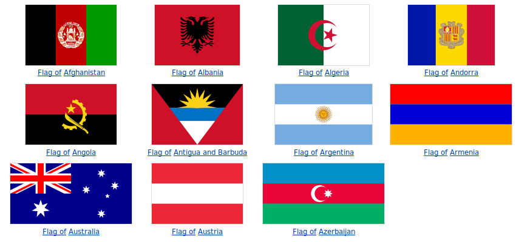


That's just the countries that start with A, B, and C and there's
already a whole ton of different color combinations. We could go
on for a very long time (which we don't have) on the theories of what
colors are good together and which are bad. Indeed many artists
will have to take several classes that revolve around this. Just
keep in mind that there are colors that go well together, and look for
them as you create graphics. It also might be a good idea to ask
someone for their opinion of which colors they think will go well
together in your graphic.
Creating a Rocket
So now that we have the basics out of the way, lets try an example of
creating a graphic. For this we will create a rocket using an
excellent tutorial by Nicu Buculei which he has graciously made
available under the CC-BY-SA license, originally found at: http://howto.nicubunu.ro/rocket-inkscape/.
The target here is to produce something like this, not extremely
realistic but easily recognizable as a rocket and the most important,
fun (hopefully) and easy to create by someone who is using Inkscape for
the first time.
So start Inkscape and draw a rectangle, which must be more tall than
wide (we are drawing a rocket!) and have straight, not rounded corners.

Then select it and convert to path, we will do node editing.
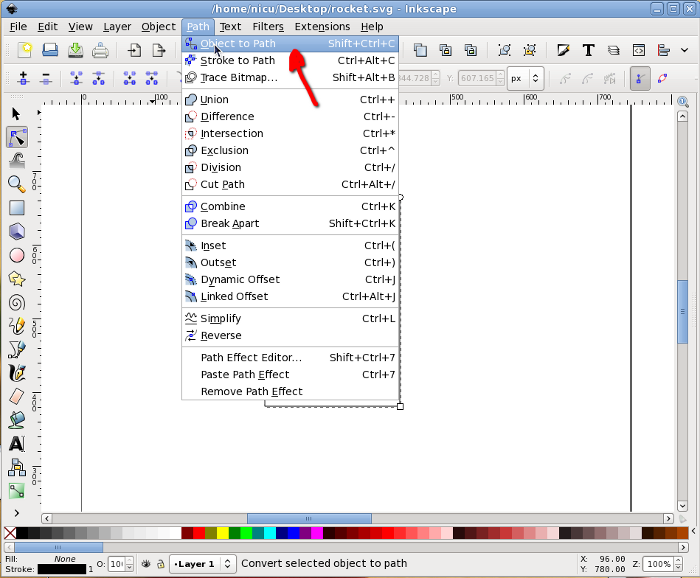
Now go in node editor and select the two top nodes. The following
operation can be done (as far as I know) only from keyboard: press Ctrl
+ Alt + > to enlarge the segment, the result should be a trapezium
with the big side up.
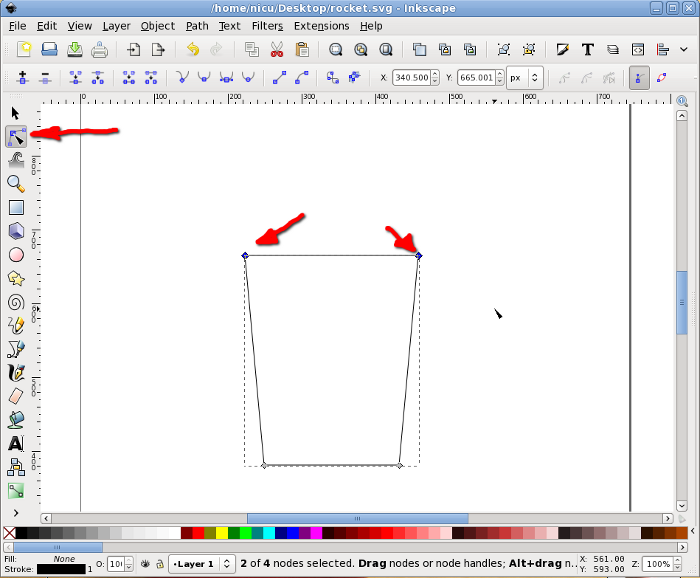
With the same two top nodes selected, add a new node in the middle of
their segment.
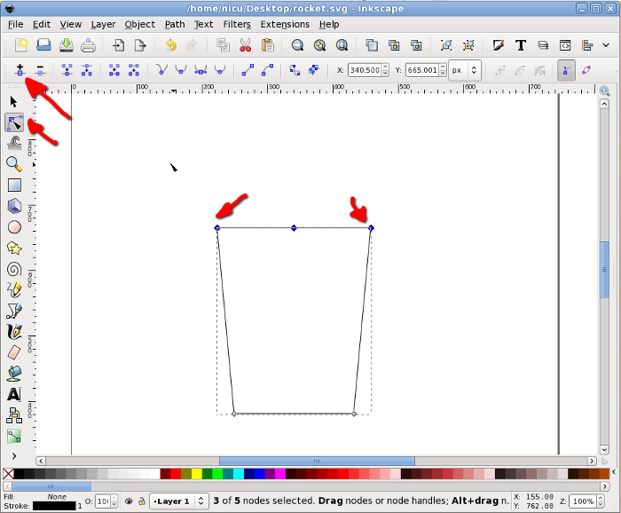
Select the new node (only it) and move it up (keep the Ctrl key pressed
to limit the movement to vertical only).

Select back the two nodes that were the top corners of the rectangle
and make them symmetric, for a shape starting to look like a
bullet/rocket.
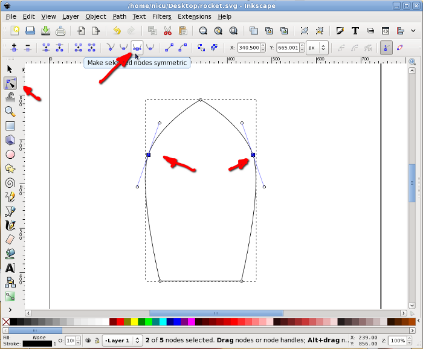
To finish the bullet shape of the rocket body we need to make the
bottom edge rounded: select the two bottom corners, add a new node in
the middle, select it, move a bit up and made it symmetric, now we have
a bullet, an aerodynamic shape.

A rocket needs some "wings", so we will create another rectangle, this
time much smaller.
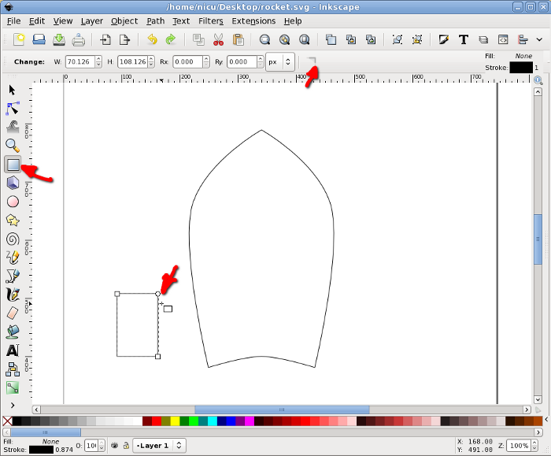
Select the rectangle and click on it once, this will put in in
rotate/skew mode so we need to skew it a bit my dragging on the arrow
on one of its edges.
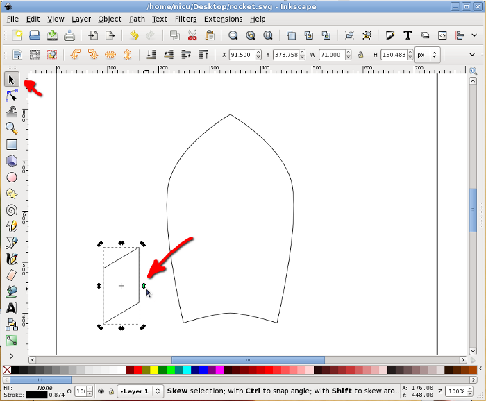
Move it in position, next to the rocket body.

Again, in rotate/skew mode, rotate it a bit by dragging one of the
arrows at the corners, until we like the alignment. Note: no worry if
the alignment is not perfect, lower it under the body and when filled
with color this won't be noticeable.
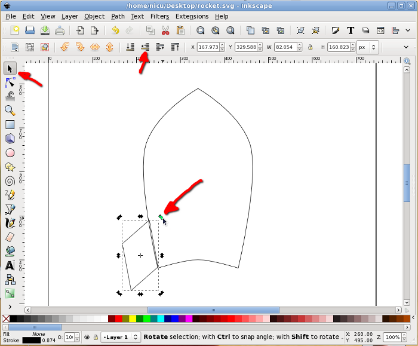
Select the wing and duplicate it.

Flip the new (duplicate) wing horizontally and move it to the other
side of the rocket body (keep Ctrl pressed to limit the movement to
horizontal).
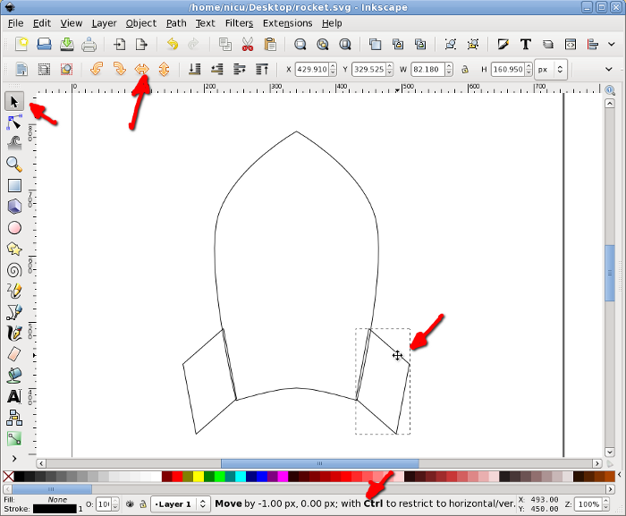
The wing facing us is another thin rectangle, with the same height as
the other wings (technically, we should have two rectangles, one for
each edge, but for now use one for simplicity). To center the new wing
to the rocket body, select it and the body, then use the Align and
Distribute dialog to align them horizontally relative to the biggest
item (the body).
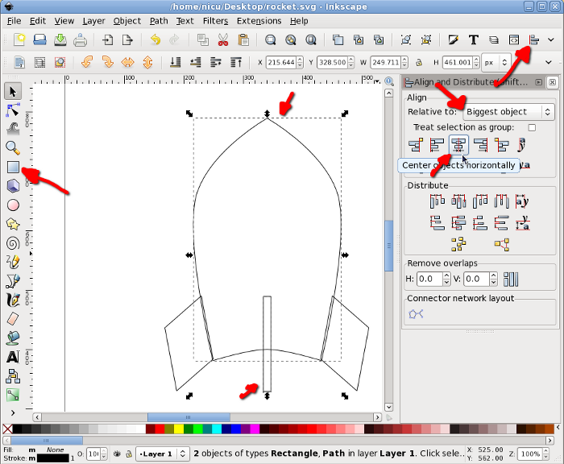
Now you know what is needed for a funny rocket? A window, so the
astronauts inside can look at the space. Start by drawing a circle,
which will be the windows frame (I think I am boring repeating this,
but keep Ctrl pressed, so what you draw is a round circle not an
ellipse).

Select the circle and the rocket body and align vertically to the
center of the body.

Another smaller circle will be the real window.
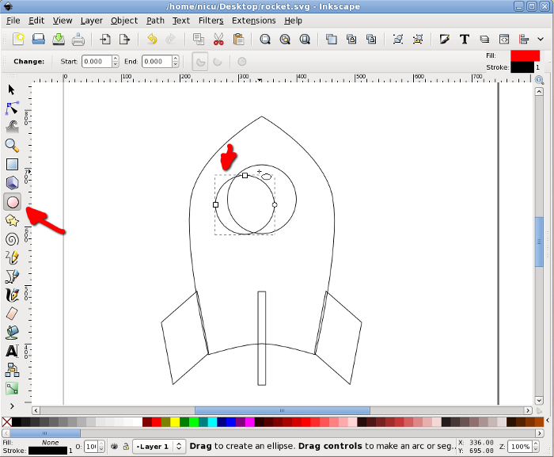
Select the two circles and align them horizontally and vertically.
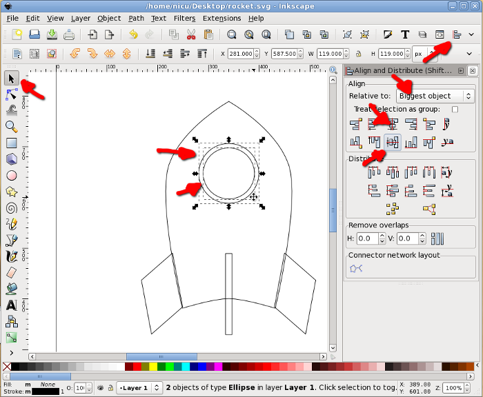
Now color the items, using either the color palette at the bottom, the
Fill and Stroke button in the toolbar or any of the other possible ways
(there are quite a few). A rocket is usually silverish, so use shades
of gray.

If you want the rocket less realistic but screaming "Fedora", make
those grays a bit bluish or go the extra mile and straightly use the
Fedora colors (light and dark blue).

Back to our rocket, let's make it fly. Take the Bezier tool (pen) and
draw freely a few spikes, they will be the flame.

Color the flame red or a redish orange and lower it under the rocket
body.

The core of the flame is supposed to be warmer, so let's draw a new set
of smaller spikes in yellow.
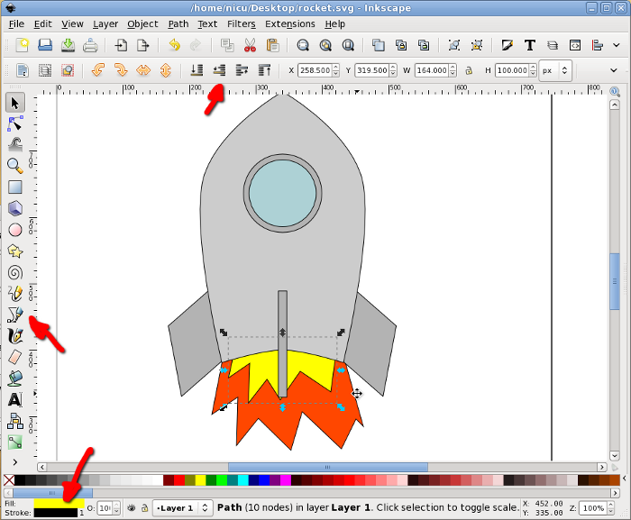
Optionally, if we want the rocket cruising, not just taking-off, select
everything and rotate a bit.

Prettyfication
A bit of beautification never hurt, so let's make the rocket a bit more
realistic (if you can call that "realistic") and less cartoon. Remove
the strokes (for example using the Fill and Stroke dialog) and use
silver gradients for all metallic surfaces, do this by using the
Gradient tool, dragging and editing colors.
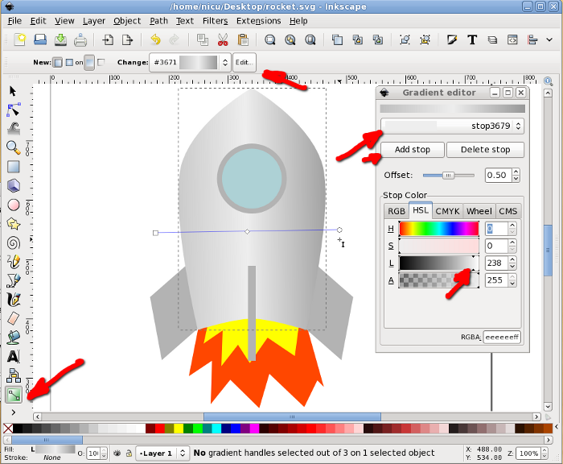
Fill everything with gradients, including the flames and the window.

Select the inner (yellow) flame and using the Fill and Stroke dialog
Blur it a bit for a more realistic (and prettier) look.

Blur also the outer (red/orange) flame. And that's about all.
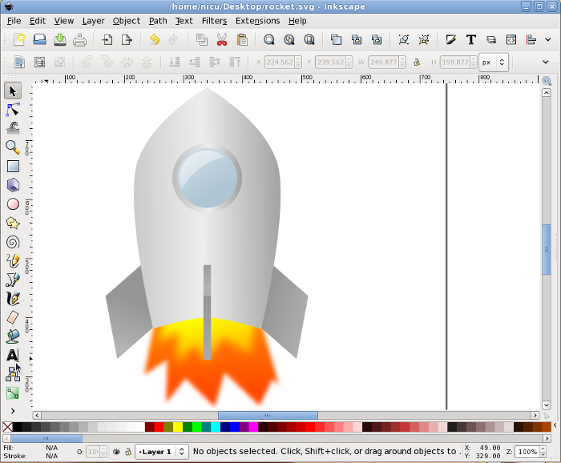
Now our rocket can take-of and fly proudly. Go to the stars and beyond
them!
http://es.lipsum.com/
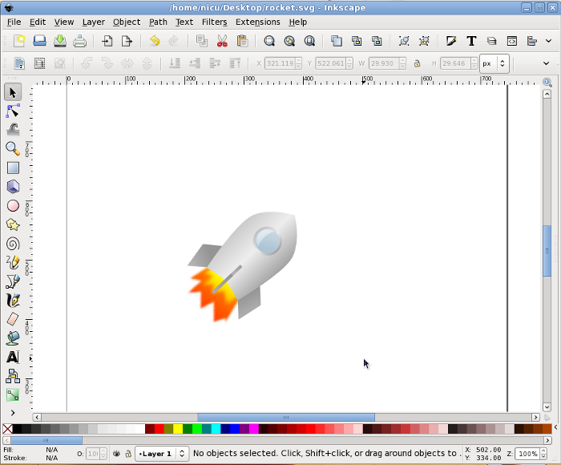
Congratulations, we've made it through a pretty advanced example from
start to finish!
Illustrator
Just as Photoshop has much in common with the GIMP, Illustrator has
much in common with Inkscape. There are a few things that work
better in one or the other, but all the important features are very
similar.
Unlike Photoshop, you do not right-click on the items in the toolbox
(the ones with a small triangle in the lower right corner) to pop up
the other tools. Instead, you left click and hold down.
After enough time passes, the other tool options will come up.
Lines

The Pen tool works exactly the same as Inkscape's Bezier tool.
When you click at a new point it makes a strait line, if you then drag
it will manipulate the handles to curve it.
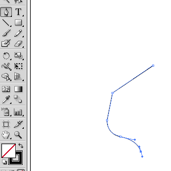
The pencil tool is also similar to the freehand lines too, in that you
just click and hold the mouse, and the line follows it wherever it
goes. However, the one in Illustrator is somewhat different
because it will automatically make the line into a bezier curve by
adding all the necessary nodes and putting their handles at the correct
settings.

What the pencil tool doesn't do however, is make strait lines. In
Inkscape you can use it by clicking in one point (and letting go of the
mouse button), then going to a different point on the screen and click
again. Inkscape with create one solid, strait line between
them. To do this in Illustrator you need to use the line segment
tool. With the line segment tool, you click your start location
and hold the mouse button down while you move to the finish location.

Shapes
Illustrator has the same standard shapes (Rectangle, Ellipse, Polygon,
Star, Spiral) as Inkscape. The only real differences is that to
get a square with rounded edges you use a separate tool, also for the
arc you use a separate arc tool instead of just making a segment of an
ellipse.

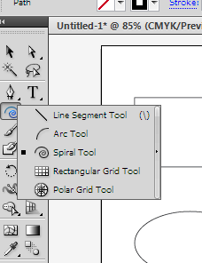
Stroke and Fill
The concepts behind stroke and fill in Illustrator are the same as in
Inkscape, however, here the tools are somewhat different.
Here we have the stroke dialog open, and are changing its thickness.

To quickly change the fill (or the color of the stroke) you can click
on the color chooser in the toolbox and it will open the colors dialog.

You can switch back and fourth from fill to stroke by clicking the two overlapping boxes. Then pick the color for each.

If you don't want to have a fill or stroke, select the white space with
the red, diagonal line through it. This indicates none.
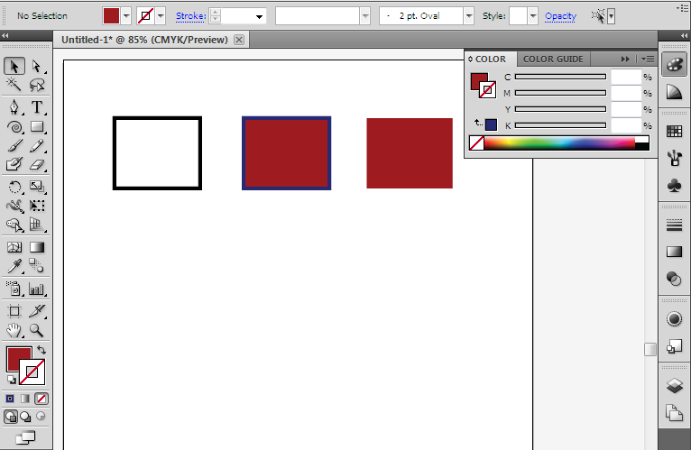
Just like with the GIMP and Photoshop, you will find that Inkscape and
Illustrator have a ton in common, and you can easily apply your
Inkscape skills if you ever have to sit down and work at a computer
with only Illustrator. (or you could just install Inkscape!)
Diagrams
Sometimes you need to create a graphic
that is based on function, and how it looks isn't as important.
Some
examples of this might be a chart of an organization's structure or the
work flow of a project. For these, special diagramming software is
available that is more suited to the task than a Vector diagram or
print layout program. Two example of these functional diagram
programs
are Dia (free, open source) and Microsoft's Visio.
The basics of all diagram editors are shapes, connector lines, and
text. Some typical shapes are rectangles, circles, ovals, and
triangles. There can also be more complicated shapes, such as one
that looks like a computer or like a house. There are also
several types of connecting lines. The simplest one can be a
plain line, or it can have arrows at one or both ends. Lines also
have different ways they can be connected between the shapes, they can
go strait to the destination, they can curve, or they can be routed so
that they only go up-do and left-right
with only 90 degree turns, they
can also be some combinations thereof. Finally there is text, you
can put text within a shape, or elsewhere on the diagram.

An example orginizational chart.

An example flow chart.
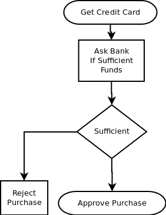
In addition to these options, there are several diagram packages out
there that allow for creating specialized types of diagrams like
software modeling and network organization. These packages have
special shapes and connectors, often ones that will only connect in
certain ways. They are generally tools specifically for use with
that skill so we won't cover any of them here.
Dia
Dia is a basic diagram creator. The above example diagrams were
made with it.
Here's a screenshot of it in action.
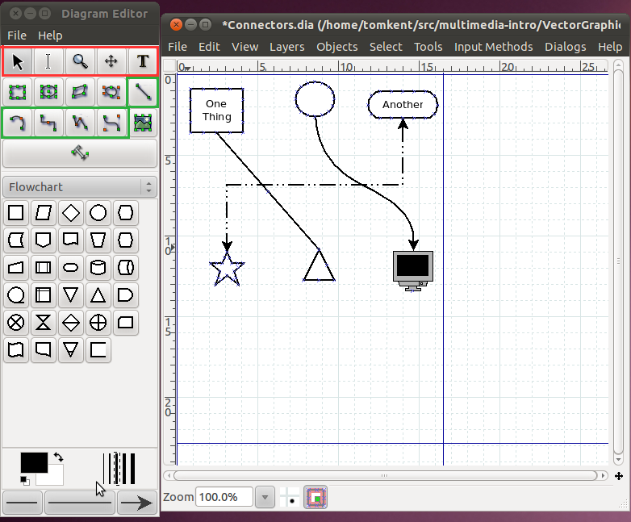
The toolbox is on the left side of the screen, there are a few
important things to note in there. There are four rows of buttons
on the top. The buttons in red are used to transform the image,
the first button, that looks like an arrow, is used to select and move
objects (just like it was in Inkscape). The tool immediately to
its right that looks like a very tall capital 'I', is the text edit
tool. When you have this tool selected and click on a shape, you
can then type and the text will show up inside the shape. You can
also use this to edit existing text within a shape. The tool in
that row all the way to the right, that looks like a capital 'T' is the
text tool. This tool allows you to put text anywhere you want on
the page.
The buttons in the green area are used for creating connectors between
different shapes. The first one, by itself on the third row, is
the strait line connector. It will go directly from whichever
shape you start at to the shape you end at. The next one of
interest is the second one in on the next row. It is the
connector that gives you square lines with 90 degree turns. The
last one in the green area is our familiar bezier line creator, it
works just like in Inkscape where there are handles for the endpoints
that determine how much the line curves. Once you have put a line
in the diagram, you can change things such as its color, thickness, or
the arrows on the ends by double clicking on it.
Below the buttons is the area for the symbols. There are many
different sets of symbols included in Dia, in this case we have the
"Flowchart" symbols selected. You can change the set by clicking
the dropdown box for the symbols.
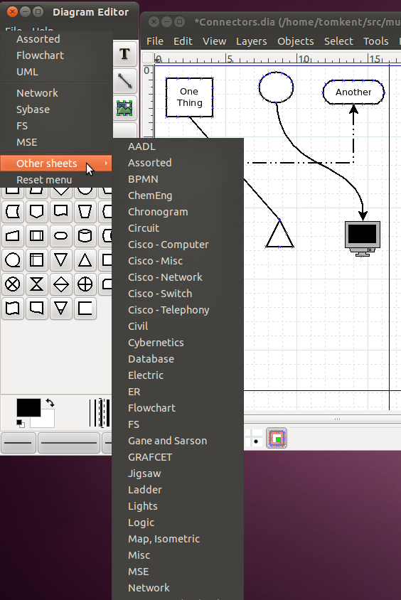
Once you have a shape selected, simply go over to the diagram window
and click one spot to start it at the upper left corner of where you
want it, then drag the mouse down and to the right until the shape is
the correct size. You should be immediately able to type text in
it if you desire. Once you have two shapes in the drawing, you
can then use the connectors between them. Just like lines, you
can change the properties of a shape (line color, fill color, text
size, etc) by double clicking on it.
Exercise
Use Dia to re-create the example flow-chart.
Other Graphic Applications
Publishing Layout
Once you've created a great graphic, you need to find a way to display
it to the world. Sometimes that is done online, but often that
means printing it out. There are a whole class of programs that
revolve around making things look good when printed out, called Print
Layout, Page Layout, or Publishing Layout programs. These go
beyond the capabilities of typical word processing programs like
Microsoft Word, which are generally focused on A5 sized
documents. They allow you to create things like brochures,
magazines, books, flyers, etc.
The most professional tool in this field is generally considered to be
QuarkXPress, but Adobe also has its popular PageMaker and InDesign
programs. In smaller companies and in personal use, tools such as
Microsoft Publisher and the open source tool Scribus do this
work.
3-D Creation
In this section we only talked about creating graphics in two
dimensions, although sometimes we talked about making it look like if
it were in three dimensions. However, all our creations were made
to be viewed from one direction and were flat graphics (you couldn't
turn them to the side or back). There is also a whole segment of
graphic creation that involves creating things that are capable of
being manipulated in three dimensions. When you have one of these
objects, it is possible to spin it around and view it from all
angles.
The two biggest packages for creating 3-D graphics are Blender (open source) and Maya (proprietary). They are often used to create characters in movies (like Toy Story or Big Buck Bunny), video games, or advertisements. (More animations with Blender)
In a tangentially related category, are object creation programs.
These can be used to create objects for things like automated milling
or 3-D printing. or they can be
used to create objects for virtual worlds like Second Life or Google
Earth. The most popular tool that people use for creating these
objects is Google Sketchup, however, it is a simplified descendant of
industrial strength Computer Aided Design (CAD) programs such as Auto
CAD, Solidworks, and BRL CAD.
Animation and Interaction
The use of computers to view graphics over the internet has allowed
them to take on a whole new property of interactivity. Computer
driven graphics are capable of performing actions in response to events
by the user (clicking somewhere, pushing a key, etc) or simply based on
a timer that started when the graphic was opened. By far the most
common way of displaying this content on the internet is through
Adobe's Flash Player plugin for web browsers (the Gnash program is a compatible, open source version).
Because the Flash standard is controlled by the Adobe corporation,
there have been two, somewhat joined, attempts to replace it with an
open standard in the last couple years. The first was to build
animation capability into the SVG format. This provides for some
of the basic features that the Flash standard supported. Beyond
that the new HTML 5 standard, which all the major browser makers have
implemented or are implementing, has numerous animation
abilities. It can deal with SVG files in more advanced ways, it
also has what is called a "canvas" element, which creates an area on
the page where all kinds of graphics and animation can be shown and
manipulated.
Final Exercise
In this several part exercise, we will be creating an advertisement for an imaginary product.
Step One: Make up a product that you want to make an advertisement
for. It can be similar to an existing product, but don't use an
existing brand, we want to create something all our own.
Step Two: Determine what message you want the advertisement to
say. Do you want it simply to be a logo or an example of the
product? Do you want to depict the product being used in a
certain way?
Step Three: Produce a layout of the advertisement. What
components do you want where? Do you want text? Do you want
use some other graphics in your advertisement (if so, find some
now)?
Step Four: Put together the rough advertisement. At the end of
this stage, all the components should be in the correct location and
the correct size. Basic colors should be determined.
Step Five: Touch Up. How are the lighting effects? Do you
need gradients to smooth things out?
Step Six: Review. Have someone else look at your advertisement
and tell you what they like and don't like about it. Go back to
step five if necessary, but don't go back any further than that.
Step Seven: Publish. Create a file that could be distributed on a
web site, in print, or on other media. Possibly upload to
openclipart.org.
Vocabulary
Attribution
Mountains, nicubunu, http://www.openclipart.org/detail/9452,
Public Domain
Tree 10, nicubunu, http://www.openclipart.org/detail/9487,
Public Domain
Tree 9, nicubunu, http://www.openclipart.org/detail/9485,
Public Domain
Tree 7, nicubunu, http://www.openclipart.org/detail/9479,
Public Domain
Tree 6, nicubunu, http://www.openclipart.org/detail/9481,
Public Domain
Tree , nicubunu, http://www.openclipart.org/detail/9469,
Public Domain
Fire June holiday's, valessiobrito, http://www.openclipart.org/detail/876,
Public Domain
Tente, spadaddin, http://www.openclipart.org/detail/71005,
Public Domain
Cardboard Box, molumen, http://www.openclipart.org/detail/1509,
Public Domain
Subtractive Color, SharkD et. al., http://commons.wikimedia.org/wiki/File:SubtractiveColor.svg, Public Domain
Gallery of soverign-state flags, wikipedia community, http://en.wikipedia.org/wiki/Gallery_of_sovereign-state_flags,
CC-BY-SA
Drawing a rocket with Inkscape is not rocket science, Nicu Buculei, http://howto.nicubunu.ro/rocket-inkscape/,
CC-BY-SA
Resources
http://howto.nicubunu.ro/ - Open Source Graphics Tutorials
https://inkscapetutorials.wordpress.com/ - Lots of Inkscape Tutorials
http://kalaalog.com/2007/09/27/how-to-illustrate-palm-tree/
Start of a series of inkscape tutorials - http://www.youtube.com/watch?v=h-zLZ6ilRRE
Start of a series of illustrator tutorials - http://www.youtube.com/watch?v=2uAzk_hLRow
TODO:
Create exercise with golden ratio
Create exercise with empty space
Create exercise with light source
Create exercise with color